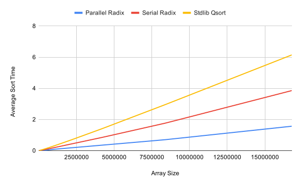

November 2019
Radix sort is a non-comparative sorting algorithm that uses a stable sort subroutine to sort digits by the 1's place, then 10's place, etc up to the most significant digit. The parallelized algorithm was inspired by Jordy Ajanohoun from the PRACE Summer of HPC. In the parallelized implementation, the input array is divided up into smaller arrays of size N/P where N is the size of the input and P is the number of available processors. With each processor starting with its own subarray of size N/P, the following algorithm is performed:
Each processor receives a subarray of size N/P. For each digit i where i goes from least significant digit to most:
1. Each processor stable sorts (this implementation uses counting sort) its subinput by digit i.
2. Processors exchange their data such that the aggregate array across all processors is sorted by digit i.
The subarrays are gathered in order of processor index and the aggregate array is returned sorted. An example of this can be found below.
The parallelized algorithm was tested for performance alongside the serial algorithm and C's standard library quicksort "qsort". Each algorithm was tested on random arrays of size 1, 2, 4 ... 224. For each array size, the performance of each algorithm was averaged over 10 random inputs seeded by 10 pregenerated random seeds following in the practice of the mentioned HPC article.
For the largest input array size, the parallel algorithm ran in an average of 1.566 seconds while the serial and qsort algorithms ran in 3.854 and 6.144 seconds respectively.
